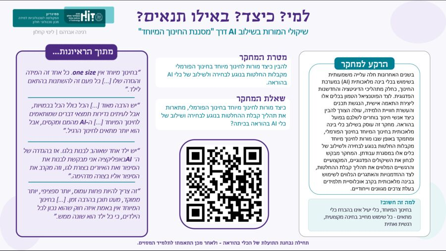
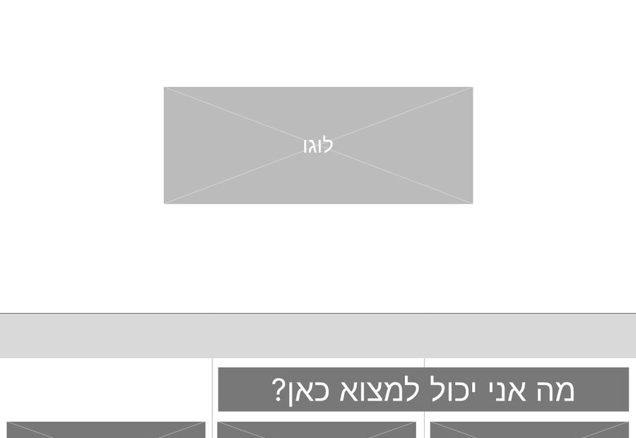

סדר את הסכר
סדר את הסכר
מחולל משחקי סדר שהתחיל כמשחק דו-ממדי והתפתח לגרסה תלת-ממדית עם מחולל תוכן, במסגרת פיילוט.
לסיפור המלאהיי, אני
מפצחת ומפתחת פתרונות למידה
אנשים, תוכן, טכנולוגיה ומה שביניהם.
שנים של הדרכה והטמעה לימדו אותי להקשיב גם ללקוח וגם ללומד בקצה, ולמצוא את מה שמחבר ביניהם. היום אני מביאה את זה לכל פרויקט, יחד עם הכלים והחשיבה של עולם טכנולוגיות הלמידה.
ארבעה פרויקטים שמראים את כל הדרך,
מאפיון ומחקר ועד מוצר עובד.
 סרטונים, פודקאסט ואינפוגרפיקה אינטראקטיבית מתוך קורס היברידי בשישה שלבים לסטודנטים ליזמות ולמשפטים.
סרטונים, פודקאסט ואינפוגרפיקה אינטראקטיבית מתוך קורס היברידי בשישה שלבים לסטודנטים ליזמות ולמשפטים.
מחקר איכותני על השיקולים של אנשי חינוך מיוחד בשילוב GenAI בהוראה, על בסיס 15 ראיונות עומק. הוגש כמועמד לכנס צ'ייס. משחק בפיתוח ידני ביוניטי. בהשראת Flappy Bird: אוריגמי שעף במסדרון בית ספר מלא במכשולים.
משחק בפיתוח ידני ביוניטי. בהשראת Flappy Bird: אוריגמי שעף במסדרון בית ספר מלא במכשולים.אני לינוי, סטודנטית בשנה השלישית לתואר בטכנולוגיות למידה במכון הטכנולוגי חולון (HIT).
הדרך שלי לפיתוח הדרכה עברה בשטח. כמדריכת צי"ד בבית הספר לפיקוד ושליטה ובחטיבת גולני, הדרכתי קצינים ולוחמים על מערכות שליטה ובקרה, הובלתי הטמעה של מערכת תכנון לחימה, והייתי אחראית על הסמכה של כ-500 לוחמים. באלביט מערכות הטמעתי מערכות ביטחוניות בשטח ובניתי תכני הדרכה, תוך עבודה ישירה מול לקוחות ומשתמשי קצה.
במילואים הקמתי מאפס את החמ"ל של היחידה ואת מערך ניהול הידע שלה. בתחילת המלחמה ובמהלכה בניתי הדרכות ותכנים, והסמכתי את בעלי התפקידים בחמ"ל. היום אני גם בונה וחונכת תרגילי מפקדות באמרל.
רואה את הלקוח, מקשיבה ללומד, ובעזרת טכנולוגיה מייצרת פתרון מדויק.
בתואר הוספתי לניסיון הזה ארגז כלים טכנולוגי רחב: לומדות, משחקי למידה ביוניטי, וידאו, אפיון UX, מחקר ועבודה עם AI. אני אוהבת את הרגע שבו תוכן מדויק פוגש פתרון טכנולוגי שעובד באמת בשביל מי שלומד.
להורדת קורות החייםבנייה וחניכה של תרגילים ליחידות לוחמות, ברמת גדוד, חטיבה ואוגדה.
הקמת חמ"ל יחידתי מאפס וניהול הידע שלו. בניית הדרכות ותכנים והסמכת בעלי תפקידים בתחילת המלחמה ובמהלכה.
שנה שלישית.
הטמעת מערכות בשטח, הדרכות ובניית תכני הדרכה מול לקוחות ומשתמשי קצה.
פיתוח עזרי הדרכה (HTML/CSS) לקורס קצינים של משטרת ישראל.
בית הספר לפיקוד ושליטה וחטיבת גולני. מטמיעת מעל"ה. מצטיינת 2018.
שנים של הדרכה והטמעה לימדו אותי איך נראה רגע הלמידה בעולם האמיתי. לכן, עוד לפני שאני מתחילה לבנות, אני בודקת שהרעיון באמת ישרת את מי שישתמש בו.
אני לא עוצרת בבקשה הראשונה. אני מנתחת את הצורך לעומק, נשענת על מה שאנשים באמת אומרים ועושים, ובונה פתרון שמדויק לקהל היעד.
עבודה עם תוכנות מתקדמות וכלי AI מעולמות שונים היא חלק מהיומיום שלי. אני לומדת כל הזמן ומתפתחת יחד עם החידושים בעולמות הטכנולוגיה.
כל תיק העבודות במקום אחד.
מחולל משחקי סדר שהתחיל כמשחק דו-ממדי והתפתח לגרסה תלת-ממדית עם מחולל תוכן, במסגרת פיילוט.
לסיפור המלאסרטונים, פודקאסט ואינפוגרפיקה אינטראקטיבית מקורס בשישה שלבים לסטודנטים.
לסיפור המלאמחקר איכותני על שילוב GenAI בחינוך המיוחד. הוגש כמועמד לכנס צ'ייס.
לסיפור המלאמשחק Endless Runner ביוניטי בהשראת Flappy Bird.
לסיפור המלאסרטון הדרכה הומוריסטי לגברים צעירים שרוצים להפתיע את בת הזוג בדייט ביתי, ולא יודעים מאיפה להתחיל.
הסרטון יתווסף בקרובלומדה שגורמת למנהלים לזהות קשיים שנשים מתמודדות איתם במקום העבודה, קשיים שגברים לרוב לא רואים כי הם לא חווים אותם.
לצפייה בלומדהלומדה שמסבירה מה זה דיפ פייק ומלמדת כלים מעשיים לזהות אותו.
לצפייה בלומדהסרטון שמלמד משתמשים מתחילים לעבוד עם הכלי "סמן" ב-Storyline. חלק מסדרה על כל כלי התוכנה.
לצפייה בסרטון
אפיון אתר שעוזר לילדים בני 10–14 להתמודד לבד עם חרדה, בדידות או בלבול: מתרשים שעוזר לתת שם לתחושה ועד סדר פעולות מעשי.
קישור יתווסף בקרובפרוטוטייפ לאפליקציית היכרויות לבני 60 ומעלה שמחפשים זוגיות, חברות או כל קשר אחר.
לפרוטוטייפמצגת הדרכה שמסבירה מהן מערכות CRM ואיך עובדים איתן.
קישור יתווסף בקרוב
ייצוג ויזואלי שהופך ידע היסטורי "יבש" לסיפור מעניין למתבגרים.
לצפייה בגודל מלאפריסה שעוצבה ושורטטה ידנית ב-Illustrator.
תמונה תתווסף
אפליקציה לניהול מאגר: הצגה, חיפוש לפי מזהה, הוספה, עדכון ומחיקה, כולל בדיקות קלט.
פרויקט פיתוח (ללא תצוגה חיה)מה אני בונה עכשיו.
פרויקט הגמר שלי בתואר, שבו אני מפתחת חוויית למידה שמשלבת רובוט. פרטים נוספים יתווספו בקרוב.
יש לכם אתגר למידה שצריך לפצח? אשמח לשמוע.